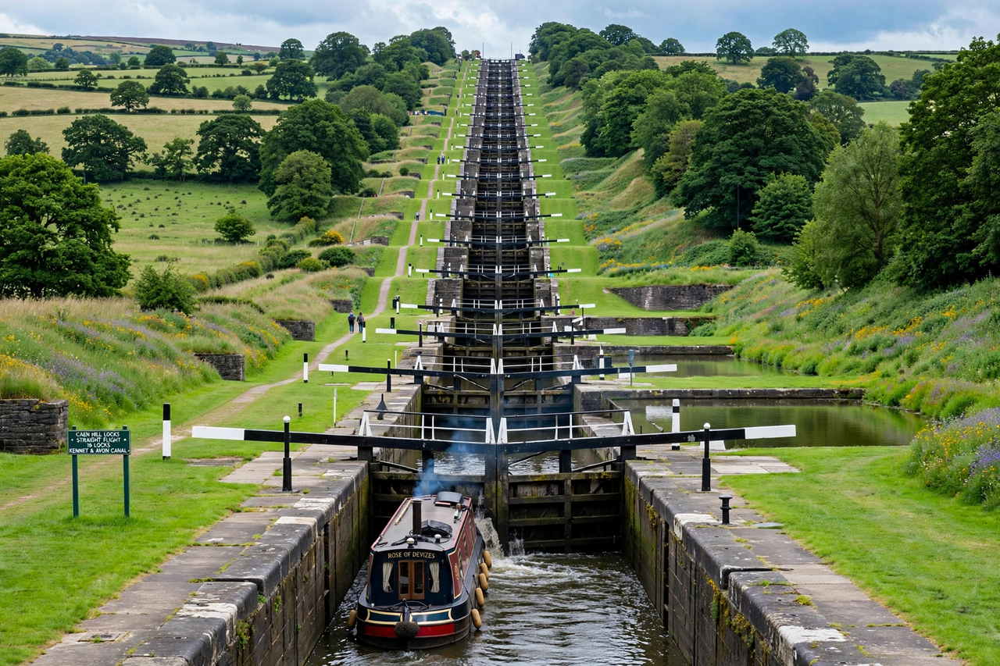

| Devizes | |
|---|---|
 Caen Hill locks, Devizes | |
| Country | England |
| County | Wiltshire |
| Population | About 19,000 |
| Known for | Caen Hill locks; Wadworth brewery |
Devizes is a market town in Wiltshire, England, about 10 miles (16 km) south-east of Chippenham. It grew up around a Norman castle and is best known for the spectacular Caen Hill flight of locks on the Kennet and Avon Canal.
The town's name derives from the Latin ad divisas, "at the boundaries", because Devizes Castle, built by Bishop Roger of Salisbury around 1080, stood at the meeting point of three parishes. The castle was dismantled after the Civil War — Devizes saw the Battle of Roundway Down nearby in 1643, a Royalist victory. The town prospered as a market and coaching centre, and later from the canal trade and brewing.
West of the town, the Kennet and Avon Canal climbs Caen Hill by 29 locks, lifting boats 237 feet (72 m) over two miles. The central flight of 16 locks in a straight line up the hillside, engineered by John Rennie and opened in 1810, is one of the wonders of the canal age and a scheduled monument maintained by the Canal & River Trust.
Devizes retains a large market square, the Wadworth brewery with its shire horses, and the Wiltshire Museum, known for its Bronze Age gold from the Stonehenge landscape. It lies close to Avebury and the chalk downlands of the North Wessex Downs.